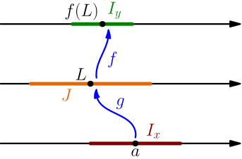
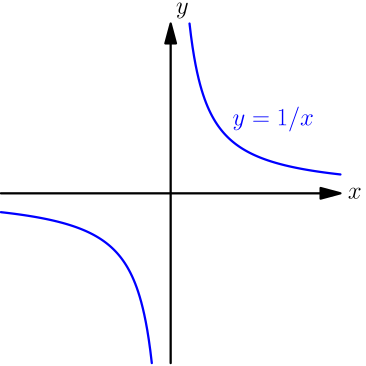

Continuity Properties¶
Make sure that you are familiar with the two ways to define continuity.
Moving limit inside a continuous function¶
Let $g$ be a function, and suppose that $\lim_{x \to a} g(x) = L$. Let $f$ be any function that is continuous at $L$. We prove that $$ \lim_{x \to a} f(g(x)) = f\left( \lim_{x \to a} g(x) \right). $$
Let $I_y$ be any output interval centered around $f(L)$. Because $f$ is continuous at $L$, we have $\lim_{x \to L} f(x) = f(L)$, so by definition of limit, there's an input interval $J$ centered around $L$ such that $$ f(\text{any number in $J$ except $L$}) \in I_y. $$ The interval $I_y$ is centered around $f(L)$, so it contains $f(L)$, and we actually have $$ f(\text{any number in $J$}) \in I_y. $$ The interval $J$ is an open interval centered around $L$, so we can use it as the output interval of $\lim_{x \to a} g(x) = L$. This way we get an input interval $I_x$ centered around $a$ such that $$ g(\text{any number in $I_x$ except $a$}) \in J. $$

By putting everything together, we get $$ f\Bigl(\overbrace{g(\text{any number in $I_x$ except $a$})}^{\in J}\Bigr) \in I_y, $$ so $\lim_{x \to a} f(g(x)) = f(L)$.
If $\lim_{x \to a} g(x)$ exists and $f$ is continuous at that number, then $$ \lim_{x \to a} f(g(x)) = f\left( \lim_{x \to a} g(x) \right). $$
Limit of division¶
From a graph, we see that the function $h(x) = \frac 1 x$ is continuous on $(-\infty, 0)$ and $(0, \infty)$; the graph is a hyperbola, and each "half" of the hyperbola consists of just one part. If this was a course in a university, then we wouldn't rely on a graph, but this is good enough for us.

If $\lim_{x \to a} g(x) = B \ne 0$, then $h$ is continuous at $B$, and with the above result, we get $$ \lim_{x \to a} \frac{1}{g(x)} = \lim_{x \to a} h(g(x)) = h\left( \lim_{x \to a} g(x) \right) = h(B) = \frac 1 B. $$ If we also have $\lim_{x \to a} f(x) = A$, then with limit of product, we get $$ \begin{align} \lim_{x \to a} \frac{f(x)}{g(x)} &= \lim_{x \to a} \left( f(x) \frac{1}{g(x)} \right) \\ &= \left( \lim_{x \to a} f(x) \right)\left( \lim_{x \to a} \frac{1}{g(x)} \right) \\ &= A \cdot \frac 1 B = \frac A B. \end{align} $$
If $\lim_{x \to a} f(x)$ and $\lim_{x \to a} g(x)$ exist, and $\lim_{x \to a} g(x) \ne 0$, then $$ \lim_{x \to a} \frac{f(x)}{g(x)} = \frac{\displaystyle\lim_{x \to a} f(x)}{\displaystyle\lim_{x \to a} g(x)}. $$
Now we finally know how to calculate limits with division in them.
Continuity of sum, difference and product and division¶
Let $f$ and $g$ be functions that are continuous at some number $a$. Let $h(x) = f(x)+g(x)$. Then, with limit of sum, we get $$ \begin{align} \lim_{x \to a} h(x) &= \lim_{x \to a} (f(x)+g(x))\\ &= \left( \lim_{x \to a} f(x) \right) + \left( \lim_{x \to a} g(x) \right) \\ &= f(a) + g(a) \\ &= h(a), \end{align} $$ which shows that $h$ is also continuous at $a$. We have very similar limit properties for subtracting, multiplying and dividing, so we can do the same thing with any of those instead of $+$.
If $f$ and $g$ are continuous at $a$, then the following functions are also continuous at $a$:
- $f(x)+g(x)$
- $f(x)-g(x)$
- $f(x)g(x)$
If additionally $g(a) \ne 0$, then the function $\frac{f(x)}{g(x)}$ is continuous at $a$.
For continuous functions nested inside each other, suppose that $g$ is continuous at $a$ and $f$ is continuous at $g(a)$. Let $h(x) = f(g(x))$. Then, by moving the limit inside $f$ (see above), we get $$ \begin{align} \lim_{x \to a} h(x) &= \lim_{x \to a} f(g(x)) \\ &= f\left( \lim_{x \to a} g(x) \right) \\ &= f(g(a)) = h(a). \end{align} $$ This shows that $h$ is continuous at $a$.
If $g$ is continuous at $a$ and $f$ is continuous at $g(a)$, then $f(g(x))$ is continuous at $a$.